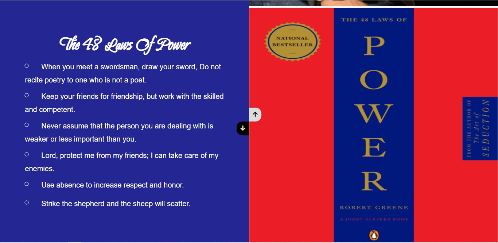
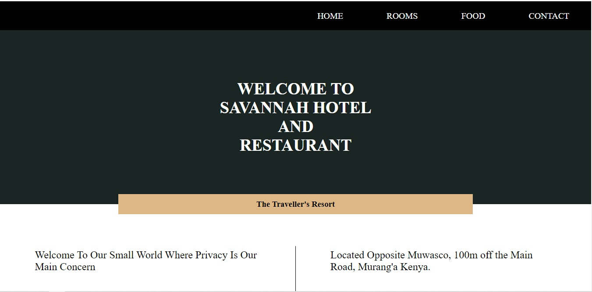
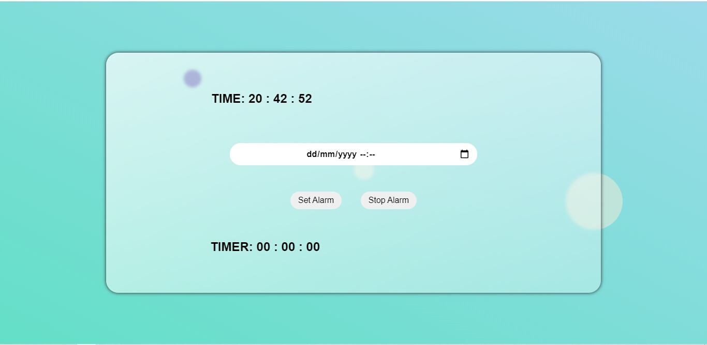

My Projects
Text-Image Flipper

I sometimes read self-help books and I frequently come across lines that I would love to see frequently, so I decided to build text-image slider with a button between them so that I would check them once a week.
Restaurant Website(Incomplete)

Rate of Employment within my area is quite low, and in the near future I plan to build some restaurant that will somehow increase the rate of employment among youth, That's the start of the website, I started it as a way of moving towards my goal.
Alarm Chronometer

I'ts an alarm with a timer, I use it to time myself from spending too much time on some websites like youtube, Instead of leaving the browser to set the timer, I thought why not build one within the browser.